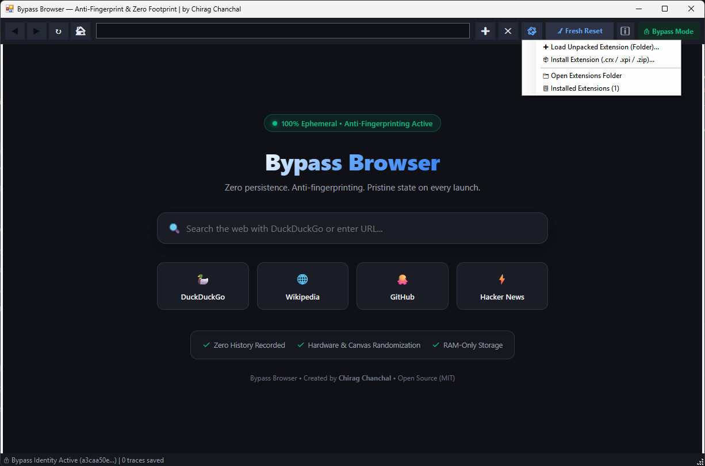

The zero-trace browser that
resets every single time.
Bypass Browser is a minimalist, privacy-first desktop browser for Windows, macOS, and Linux. Built with randomized hardware signatures, ephemeral RAM-only sandboxing, and full Chrome & Firefox Extension Mode.

Built for total session isolation.
Traditional browsers remember everything. Bypass Browser starts pristine, leaves zero traces on disk, and disguises your device fingerprint.
Zero Disk Footprint
Every browsing session lives in an isolated RAM sandbox. When you close the window or hit Fresh Reset, cookies, cache, storage, and history are wiped immediately with exponential-backoff retries.
Anti-Fingerprint Stealth Shield
Injected stealth script introduces imperceptible 1-pixel shifts to HTML5 Canvas rendering, randomizes WebGL vendor and renderer strings, and spoofs CPU hardware concurrency to defeat device fingerprinters.
1-Click Clean Slate Reset
Press Ctrl+Shift+Delete or click 🧹 Fresh Reset to flush active memory, generate a completely new fingerprint identity salt, and reset immediately to a clean slate.
Seamless Auto-Updates
When updates are published on GitHub, installed instances across all devices automatically discover the update, stage it in the background, and seamlessly upgrade your browser on restart.
Security-Audited Lockdown
Strict omnibox URL sanitization blocks dangerous pseudo-protocols (javascript:, data:). Native host objects and web message bridges are disabled to protect your host OS.
Native Web Engines
No massive 250 MB browser runtime bundles. Uses native Microsoft Edge WebView2 on Windows, Apple WebKit on macOS, and WebKit2GTK on Linux for instant launch times and low memory use.
Chrome & Firefox Extension Mode
Use your favorite ad-blockers, developer tools, and extensions without sacrificing RAM isolation.
Package Installer (.crx / .xpi / .zip)
Select any downloaded Chrome .crx file or Firefox .xpi add-on archive. Bypass Browser automatically parses package headers, extracts contents, and injects the extension in real time.
Load Unpacked Folders
Select any custom folder containing a manifest.json to load your developer add-ons or unpacked extensions immediately with zero configuration.
Ephemeral Extensions Sandbox
Extensions run strictly within the ephemeral InPrivate memory sandbox. Any data or tokens created by extensions are discarded when you exit or reset the session.
Download for your platform
Free, open source, and lightweight. Choose your operating system below to start browsing with zero footprint.
macOS
Apple Silicon & Intel · macOS 11+ · 34.9 MB
Download .zip (Universal) Extract and run BypassBrowser.appLinux
Ubuntu, Debian, Fedora, Arch · 45.3 MB
Download .tar.gz (x86_64) Extract and execute ./BypassBrowsergit clone https://github.com/chiragchanchal/Bypass-Browser.git && cd Bypass-Browser && pip install -r requirements.txt && python browser.py
Frequently Asked Questions
Everything you need to know about Bypass Browser and its security design.
Standard Incognito mode only prevents your history from being saved to your local disk, but it leaves your hardware fingerprint (Canvas hash, WebGL renderer, CPU core count, audio latency) completely exposed to trackers. Bypass Browser actively randomizes your Canvas pixel signatures, masks your GPU and concurrency values, and completely purges all in-memory caches upon closing.
Yes! Click the 🧩 puzzle icon on the top toolbar to install extensions from Chrome .crx packages, Firefox .xpi archives, or unpacked developer directories containing a manifest.json. You can also drop unpacked folders directly into the extensions/ directory for automatic launch.
On startup, a background worker queries GitHub for new version releases. When an update is detected, it is quietly downloaded in the background. A prompt appears allowing you to restart and update in 2 seconds, or apply the update seamlessly the next time you close the browser.
Zero. All temporary session storage is allocated in memory and a protected temporary folder that is wiped on exit using multi-pass retries. Even if the process is terminated abruptly, stale session wipers clean up lingering data on the next launch.